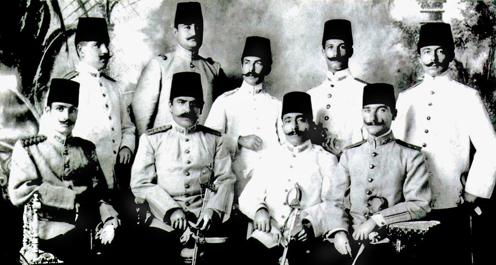

INRI ARCHIVE
Öneri ve Şikayetleriniz İçin
Bizlere Destek Olmak İsterseniz PATREON
Arşivdeki Belgeler
H.G. WELLS DÜNYA TARİHİ (1927)
HARBİ UMUMİNİN MENŞEİLERİ (1915)
MİNBER GAZETESİ MUSTAFA KEMAL PAŞA RÖPORTAJI (1918)
MALUMAT GAZETESİ
KARAGÖZ GAZETESİ
HARP MECMUASI
HATLAR